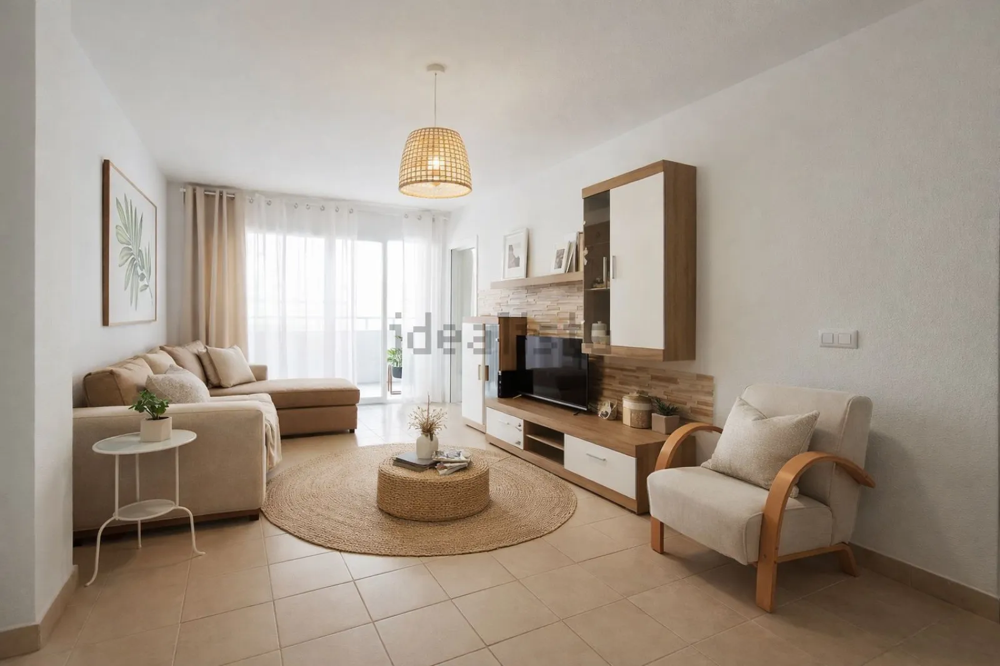
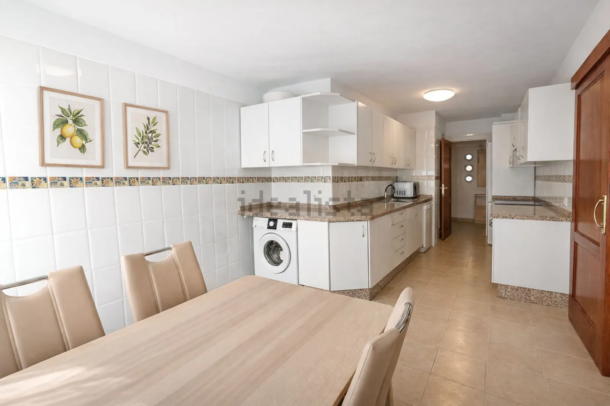
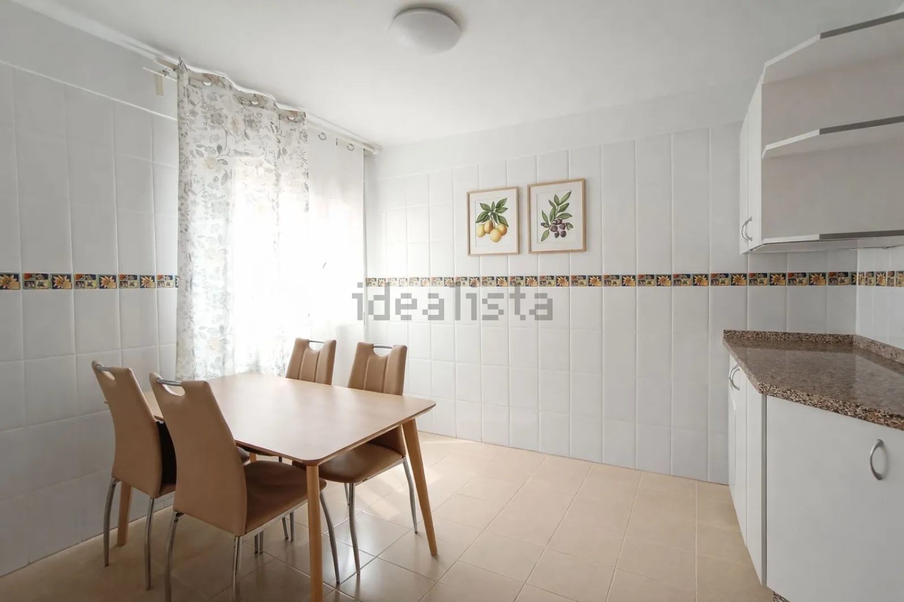
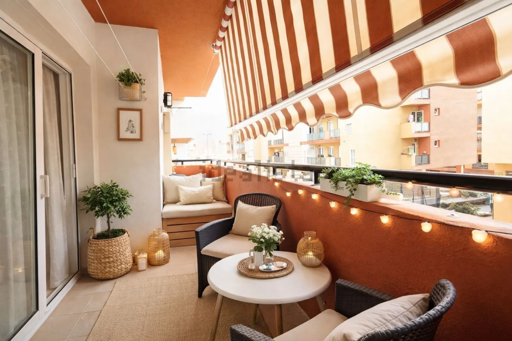
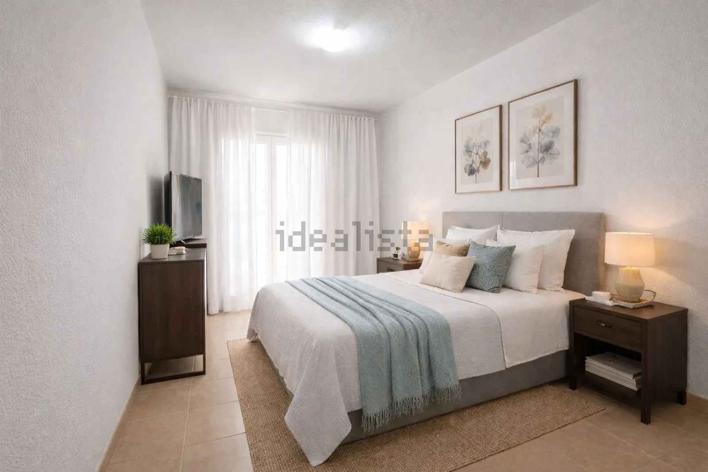

Apartamento amplio con garaje, trastero y balcón de 12 m²
Cabo Blanco, Arona





Posibilidad de tercera habitación: metros poco habituales para el precio.
Si buscas una vivienda con metros, amplitud y potencial, este apartamento en Cabo Blanco, Arona, merece tu atención.
Cuenta con 85 m² útiles muy bien distribuidos: 2 habitaciones, 2 baños, un salón luminoso y una amplia cocina con espacio suficiente y posibilidad de adaptar una tercera habitación, una ventaja poco habitual en este tipo de inmueble.
Uno de sus grandes atractivos es el balcón de 12 m², ideal para disfrutar de un espacio exterior cómodo. Además, la propiedad incluye plaza de garaje, trastero y cuarto lavadero en la azotea comunitaria: tres extras que suman valor real.
Ubicado en Cabo Blanco, una zona cada vez más demandada por su conexión, servicios y comodidad. Una propiedad con fundamento, recorrido y buena salida comercial.
Características
Ficha técnica
- Superficie construida
- 110 m²
- Superficie útil
- 85 m²
- Dormitorios
- 2
- Baños
- 2
- Planta
- 1ª planta exterior
- Ascensor
- Sí
- Orientación
- Sur
- Año de construcción
- 2007
- Estado
- Segunda mano · buen estado
- Comunidad
- 30 €/mes
- Certificado energético
- Pendiente de etiqueta
- Referencia
- 111230958
Hablar de esta vivienda por WhatsApp ↗ Pedir información